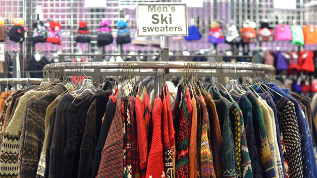
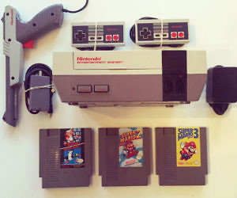

What should I look for in a thriftshop?
Thriftstores can be overwhelming at times with what seems like never ending clothes racks and mountains of old cookware.
I have compiled a list of what you should look for to make your next buck.
Toys
When people clean out their kids’ room, many valuable toys get discarded that are highly sought after. Breyer Horses, American Girl Dolls, and classic Barbies frequently end up in thrift stores and sell extremely well online.
Kitchenware
I know that I cracked a joke about "mountains of old cookware", but some pieces are highly sought after. Cast iron pots and old china are great things to look for if you plan on selling on Poshmark or perhaps even Mercari.
Video Games
Older video games have made a nostalgic comeback and often find their way into people's donate bins. Older nintendo consoles and games sell for big money on Ebay, and do not stay listed for very long.
Vintage Clothing
Vintage clothing has also made a nostalgic comeback as Gen Z has traded in their athletic wear for old band tees and your mother's Studio 54 earrings. Old basketball jerseys, high waisted jeans, and 90's graphic tees are all things you should look for when you browse thrift stores.
 